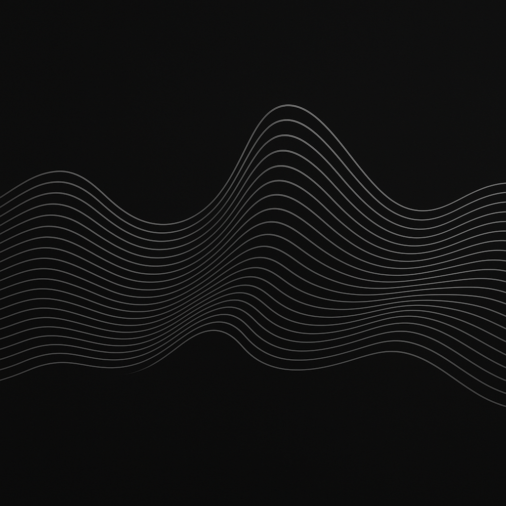

During my internship at The Place to Be Gallery, I worked as a backend developer, contributing to the development and maintenance of the official website,that was built using WordPress. My primary responsibilities included enhancing backend functionalities, managing content workflows, and integration of plugins. This role gave me hands-on experience in real-world content management and production for a live art platform.
The Place to be Gallery
Intern | Jan 2023 - May 2023
VoyagerTravel App
Parcel ManagerProject
ISL Recognition and Translation SystemProject

Technical Information:
# Wordpress (Backend)
# Yoast SEO, WPForms, Mailchimp, Google Analytics
# XAMPP/MAMP, WP Migrate DB / Duplicator